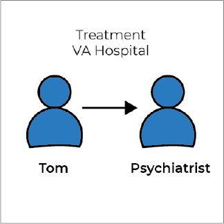
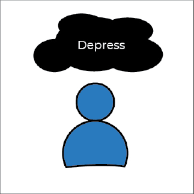
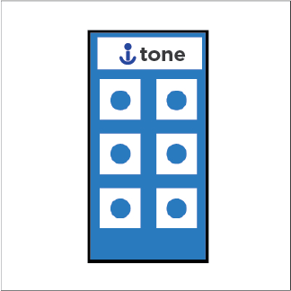

INSTAGRAM UI/UX
Atom | HTML | CSS | Bootstrap | Illustrator | Sketch | InVision | Git&GitHub
The new feature helps you see feeds of whom you need.
PROJECT OVERVIEW
Instagram is a popular photo-sharing application for smartphones.
Compared with other social networks, One reason for Instagram's popularity is its simplicity.
Rather than focusing on a lot of different features, Instagram has only one core feature, which makes it especially easy to share photos and see photos from your friends.
www.statista.com
According to www.statista.com. This statistic gives information on the number of monthly active Instagram users as of September 2017.
As of that month, the mainly mobile photo sharing network had reached 800 million monthly active users, up from 600 million in December 2016.
PROBLEM STATEMENT
“Through researches and interviews, one of the common responses was that many people didn't see posts or they saw them later because of so many posts without filtering.”
SOLUTION
This feature can support users with another way to see more posts.
We are going to systemize the feed by putting their followers in a different section.
For example, friends in one section, businesses, news, sports etc. in another section. You can decide what the sections will be called. Swipe at the top to look at the different feeds.
TARGET AUDIENCE
Instagram age user demographics

This statistic shows the distribution of active Instagram users worldwide as of January 2019, sorted by age group and gender.
During the survey period, it was found that 15 percent of global active Instagram were women between the ages of 18 and 24 years old.
Users under 35 make up more than 70 percent of Instagram’s more than 800 million active accounts worldwide. That relates to primary research interview demographics.
RESEARCH
Conduct the interviews with Veteran who are diagnosed with PTSD.
"I am a Vietnam Veteran who is struggling with PTSD. I am in the recovery path program in VA hospital. I have to do a journal to keep track of my emotions daily to improve my coping skills and get help with my trauma."
"I don’t want to bring paper and pen to journaling. It sounds that takes a lot of work."
PROOF OF CONCEPT
Persona
Persona

Name: Anthony
Age: 40
Occupation: US Army Veteran
Location: Houston, TX
Bio
Anthony is an Army Veteran who was diagnosed with PTSD, combat trauma. He retired in medical retirement condition and in the recovery program at the VA hospital.
He is working one-on-one with assigned individual mental health counselors.
“Anthony has to keep track of his emotions by journal, the daily routine when, where, and what is triggering his trauma.”

“Anthony has to keep track of his emotions by journal, the daily routine when, where, and what is triggering his trauma.”
Persona

Name: Abella
Age: 35
Occupation: US Air Force
Location: Colorado Springs, CO
Bio
Abella is an active duty officer in the US Air Force, who was diagnosed with PTSD.
She is currently working on a stress management program with assigned individual mental health counselors.
Her temper is up and down from level 0 to 7 in a second. Her mood is also unstable.
“In the treatment program, she has to journal to figure out what reasons and situations cause her mood swing .”

“In the treatment program, she has to journal to figure out what reasons and situations cause her mood swing .”
1. Person

Tom is a Vietnam Veteran who was diagnosed with PTSD.
2. Situation
Tom is currently in the individual treatment program with psychiatrists at San Francisco VA hospital, CA.
3. Awareness

In the part of the treatment program, he has to do a journal to keep track of his emotions daily to improve the coping skills and get into trauma and triggers, he has to write down the information. What is an emotion? Where, When and Why does it happen?
4. Problem

But he always forgets the writing equipments and keep them with him all the times.
5. Introducing

His psychiatrists are recommending the i-tone application that he can journal on his mobile phone. Tom download i-tone application and sign up for the personal account.
6. Trigger
Tom has depression at home deal with the isolation issue.
7. Journal
He adds depression as a new emotion on the application. Put down what is the trigger and detail. The application automatically records the location. He keeps journaling until the next appointment.
8. Success
He shows the record to the individual psychiatrist. The psychiatrist using data to be part of a treatment plan.
INFORMATION ARCHITECHTURE
The organizing and structuring content of the application.


LOW-FIDELITY WIREFRAMES
Map out of the interface, screens and basic information architecture.

Login
Home

Add Journal
Journal Detail

Profile

Menu
Emotion List

Evaluation
USER INTERFACE DESIGN
The final user interface design and the application interaction.
Login
Home

Add Journal

Journal Detail

Profile

Menu
Emotion List
Evaluation